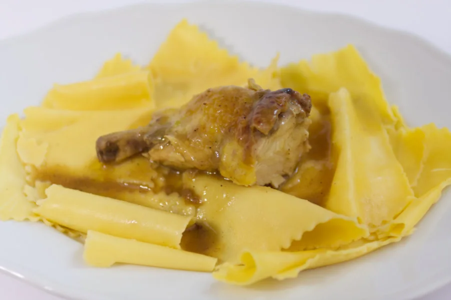

Una storia dal 1904. Un menù fatto per lei.
Per la Trattoria Blanch abbiamo trasformato menù, carta dei vini e identità del locale in un’esperienza QR su misura. Senza farle perdere l’aria di casa e di tradizione.

Portare una trattoria storica sul telefono, senza farla diventare un’app qualsiasi.
A Mossa, tra Gorizia e il Collio, la famiglia Blanch porta avanti un’attività nata come osteria nel 1904. Il suo menù non poteva sembrare quello di una cicchetteria contemporanea: doveva conservare il carattere della casa, ma rendere piatti e vini semplici da consultare da QR.

Il punto di partenza: materiali veri.
Il locale ci ha fornito le fotografie del menù completo, la carta dei vini e il proprio marchio. Da questi materiali abbiamo costruito una carta digitale leggibile, senza sostituire il racconto del ristorante con piatti inventati o una grafica generica.
Il gallo del marchio, il verde bosco e le immagini della trattoria guidano la pagina. La storia raccontata dal locale rimane il riferimento per il contesto, non una scenografia artificiale.
Dalla carta fotografata a una carta da sfogliare.
Abbiamo seguito il flusso del nostro servizio: il ristoratore comunica i contenuti; il Team RenMenu organizza, realizza e pubblica il menù. Le future modifiche arriveranno sempre dal locale, senza chiedergli di usare un pannello tecnico.
Contenuti del locale
Piatti, prezzi e vini sono stati ricavati dal materiale consegnato, mantenendo la distinzione fra cucina e carta dei vini.
Identità su misura
Marchio originale, fotografia autentica e impaginazione editoriale richiamano la trattoria storica anziché ripetere la demo di Al Bakaro.
Menù e QR pronti
Una pagina dedicata e un QR stabile: gli ospiti aprono il menù sul proprio telefono; il Team RenMenu cura le modifiche successive.
La tradizione si vede. Il menù si usa.
Una carta mobile con un percorso rapido verso ciò che conta, senza rinunciare al racconto del locale.
- Italiano, inglese e tedesco selezionabili dall’intestazione.
- Cucina e vini in viste separate, con categorie e ricerca.
- Marchio e fotografie originali, leggibilità e accesso diretto a contatti e indicazioni.
Piatti, disponibilità e prezzi possono cambiare: per ordinare e per le allergie fa sempre fede il personale della trattoria.
